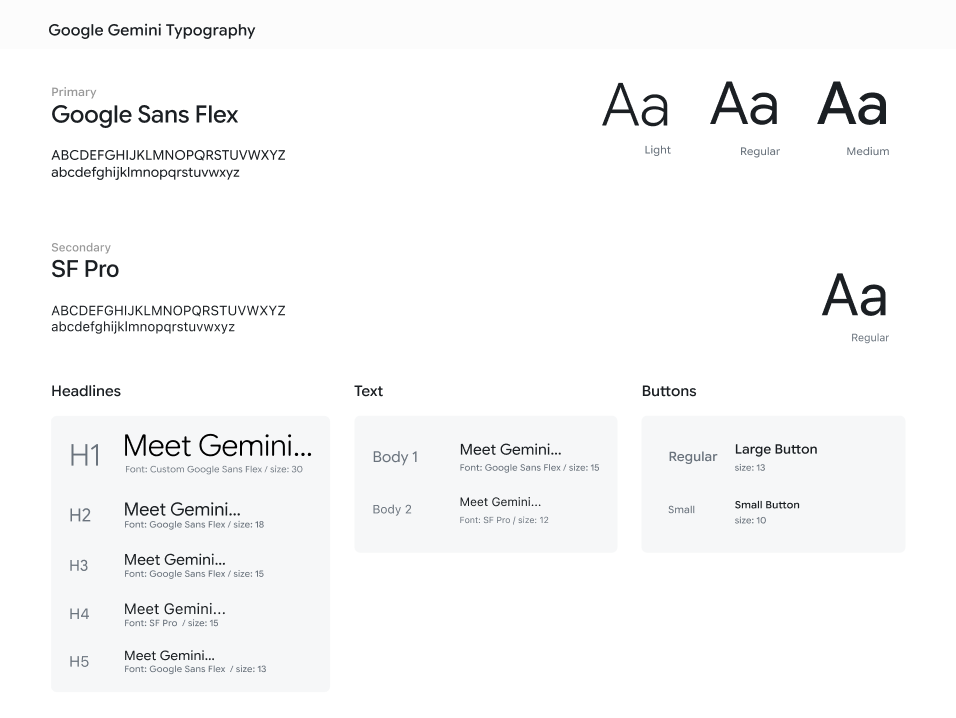
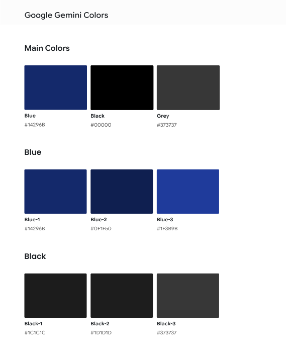

A redesign of the Google Gemini home screen for iOS, built on top of a full recreation of the app. Rebuilding it first is what let me tell Gemini's deliberate constraints apart from its unused space. The redesign replaces the generic prompt row with two suggestion stacks, one that reads the time of day and one that picks up the work already in progress.
That is the whole opening screen. The prompts are the same set on every phone, and they say nothing about what the app can do or what you were doing the last time you opened it. Every session passes through this screen, and most of it is blank.
The greeting uses your first name and nothing else.
Nothing here suggests the app can read a photograph or write working code.
The area under the greeting is the first thing every user sees and the least used part of the app.
I watched classmates open their assistants instead of asking them how they use them. Almost nobody read the prompts. They tapped the field and typed the question they had walked in with, which means the row of suggestions costs space and returns nothing.
Reading them costs more than typing the question already in your head.
People come back to a thread, but finding it means remembering it exists and remembering what it was called.
The hour, the place, the weather, the last conversation and where it stopped. None of it reaches the first screen.
I started out asking how the home screen could offer better suggested prompts. That question takes the prompt row as given and only ever produces a different list. The more useful question was what the screen is for, and the app already holds five signals it never puts on it.
Whatever replaced the prompt row was going to take more space than the row did. I wrote down three rules before drawing anything, and used them to throw out most of what I drew afterwards.
A card is only worth reading if it beats the question you were already going to type.
Anything pasted on top would be a redesign in my own voice rather than a change to this product.
The stacks take room from the text field, so every card needs a reason to be there.
Gemini runs on its own kit rather than Material Design, so almost nothing came out of a library. I drew the typeface, the icons, the status bar and two keyboards as vectors, then rebuilt every screen a session passes through. None of that work shows up in the redesign, and all of it had to exist first.
Google Sans Flex. I drew the characters rather than substitute something close to them.
Corner rounding and stroke weight are most of what makes an icon feel like this product.
Apple's kit does not carry the ones on my phone, so both were built from scratch.
The account is already known by the time the app opens, so signing in is one button. The drawer behind it holds four destinations and then recents, which is where a returning conversation has to be found.


Search is the only route back to a conversation once it has dropped out of recents, and it asks you to remember that the conversation exists before you can look for it. The thread it opens here is the short answer this project started from.


The second question is deliberately long, because a long answer is where a chat interface has to work hardest. Headings and a bulleted list carry it, and the prompt itself collapses to one line once it has been sent.


A script comes back inside a code block, and under it Gemini offers two ways to keep going with the thing it has just written. The block is also where the recreation ran into a problem I spent longer on than I should have.

Thumbs down opens a sheet with six reasons and a free text field. Submitting it returns you to the conversation with the rating held and one line of acknowledgement, which is the whole of the feedback loop.


A code block in a chat clips long lines, and the comments Gemini writes into its own code are full sentences. I built a fix for that before I asked whether the fix was worth building.
A control at the top right of the block opens it on a screen of its own, with the chat input still reachable underneath. Whole lines fit, and the comments read as sentences again.


Any text size past the default puts the ends of the lines back outside the screen. The fullscreen view is a better version of the same compromise rather than a different answer to it.

Landscape gives a long line the wide edge of the screen, so the eye travels down the script instead of across it. I still think it is the best way to read code on a phone. What I had not asked is who reads code on a phone, and the answer is that almost nobody does it by choice. People review code at a desk.

Noticing a problem and proving it is worth solving are two separate tests, and I had been treating them as one. The code view went back in the file and the home screen became the project.
Gemini has no public kit, so its type, colour and components had to be documented before anything could be added to them. I built the system out of the recreation, sampling values off my own renders rather than guessing at them, and then extended it for the stacks.
Google Sans Flex carries the product, with SF Pro behind it for anything the operating system draws. The scale runs from the home screen greeting down to the small print under a rating, and every size is recorded at the point it appears rather than as a ratio.

Three families, each one sampled from the renders. The blue belongs to the glow behind the composer, the blacks are the surfaces the screen is built out of, and the greys are where secondary text and inactive controls sit.

Everything a session touches, drawn as components in one Figma file. The phone frames and background gradients, the chat bubbles, two keyboards, the side drawer, the search screen, the feedback sheets and the suggestion cards. The stacks were built as an extension of this file, which is what kept them in Gemini's voice instead of mine.
The greeting stays. Below it, two labelled stacks instead of one prompt row. The left one reads the moment, the right one picks up work already in progress. Four cards in each, and every card carries a reason rather than a category: Shibam Coffee on Centre Avenue closing at eleven, or the Python thread and the thing still left to learn in it.


A flat fill would have been easier to keep legible, and it would have looked pasted on top of the screen. Gemini already runs a blue gradient up from the composer, and glass lets that gradient stay visible through the card. It is the harder of the two to read and it is what makes the addition belong to the product.
The same screen at three moments. The evening column moves from late-night coffee to dinner spots while the work column holds, and then the work column moves on its own from the Python thread to the study app project. Neither one waits for the other.


Rebuilding the app first is the decision I would make again. Until the screens existed at full size I could not tell which parts of Gemini were restraint and which were space nobody had got to yet, and every opinion I had about it stayed an opinion.
The fullscreen code view was a real improvement to a real problem and still the wrong thing to spend a redesign on. Learning to separate those two judgements, whether something is better and whether it is worth doing, was most of what this project taught me.
If I picked it up again I would design for the times the context is wrong. A suggestion that misreads the moment is worse than no suggestion at all, and nothing in the current design says what happens when the app guesses badly.